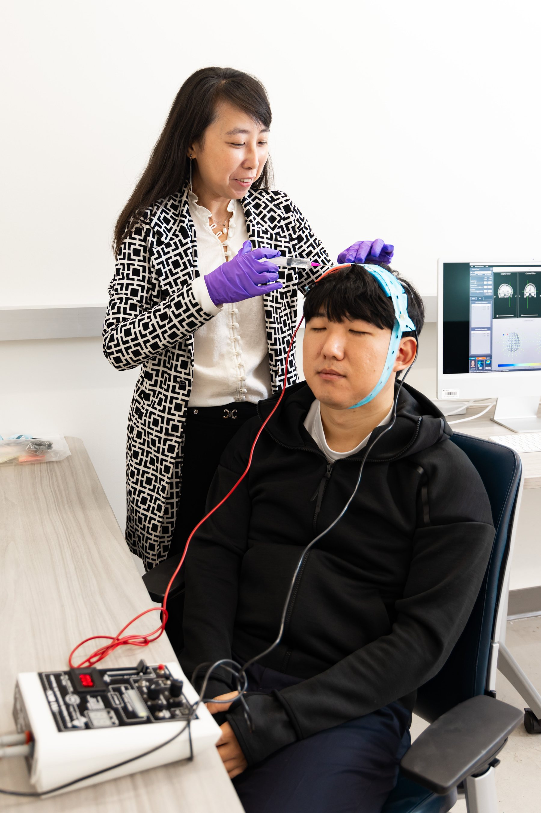

Collaborate with VCII
Bring the question you can't answer alone.
Clinicians, scientists, engineers, and industry partners: tell us what you want to see, measure, or change for patients.
More than one way in.

Clinicians & scientists
Bring an imaging or care question from anywhere in Vanderbilt Health.
Clinical inquiry →Industry partners
Sponsored research, pilot projects, and partnerships that put intelligent imaging into practice.
Industry inquiry →